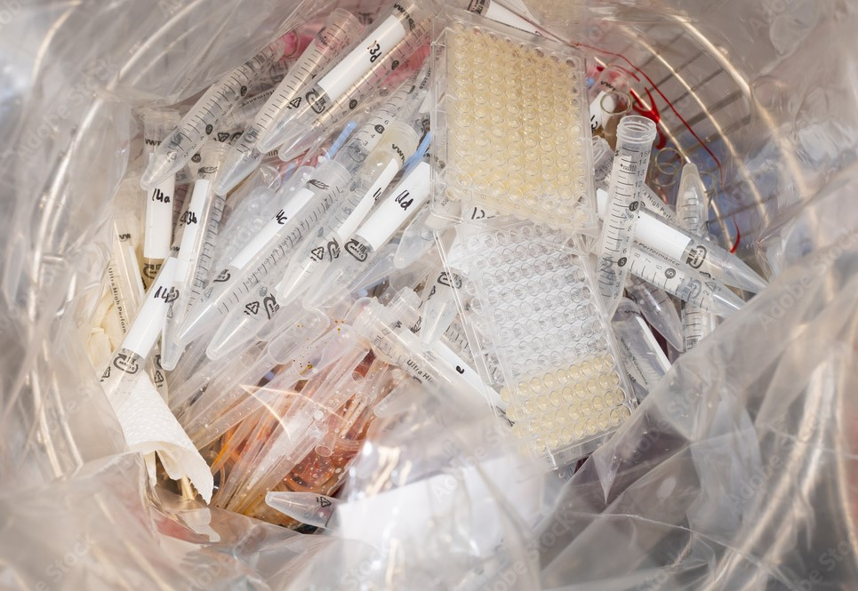
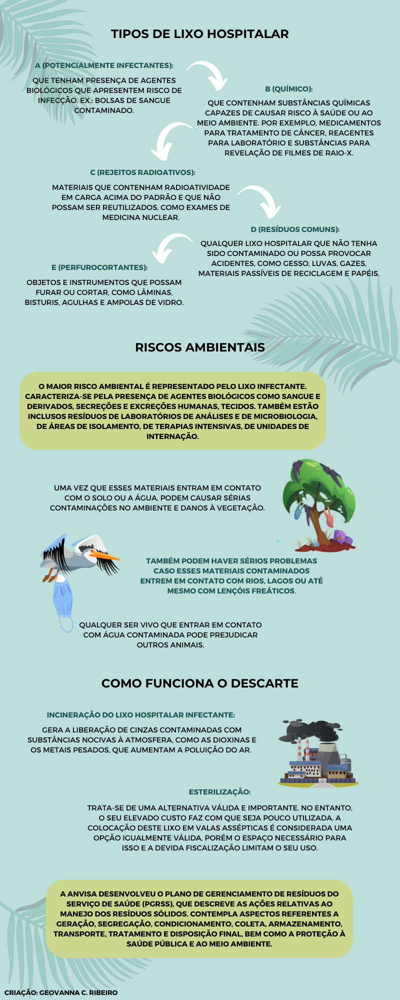

O lixo hospitalar, também chamado de resíduo hospitalar e de resíduo de serviços de saúde, é todo tipo de lixo proveniente do atendimento a pacientes ou de qualquer estabelecimento de saúde ou unidade que execute atividades de natureza de atendimento médico, tanto para seres humanos quanto para animais.
Pode representar risco à saúde humana e ao meio ambiente se não houver adoção de procedimentos técnicos adequados no manejo dos diferentes tipos de lixo gerados. Alguns exemplos de lixo hospitalar são materiais biológicos contaminados com sangue ou patógenos, peças anatômicas, seringas e outros materiais plásticos; além de uma grande variedade de substâncias tóxicas, inflamáveis e até radioativas.
A Agência Nacional de Vigilância Sanitária (Anvisa) estabeleceu regras nacionais sobre acondicionamento e tratamento do lixo hospitalar gerado - da origem ao destino (aterramento, radiação e incineração). O objetivo da medida é evitar danos ao meio ambiente e prevenir acidentes que atinjam profissionais que trabalham diretamente nos processos de coleta seletiva do lixo hospitalar, bem como no armazenamento, transporte, tratamento e destinação desses resíduos.
